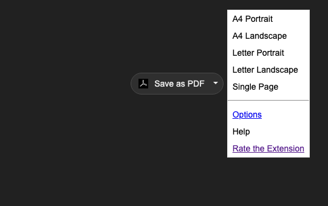
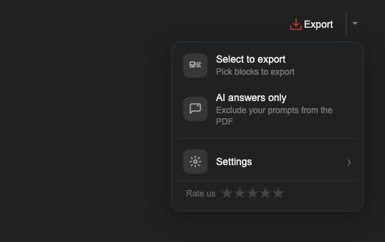
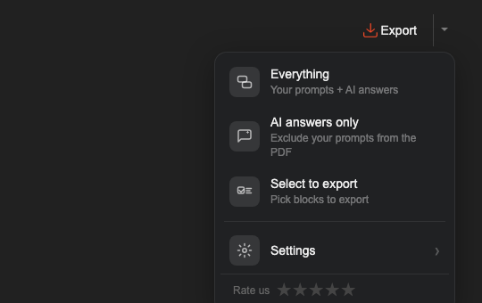
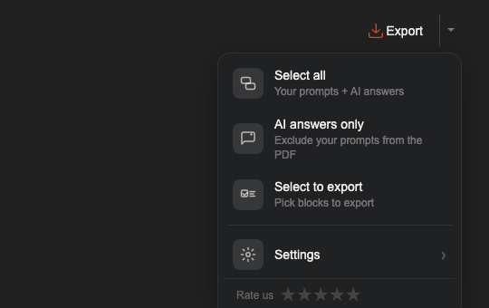
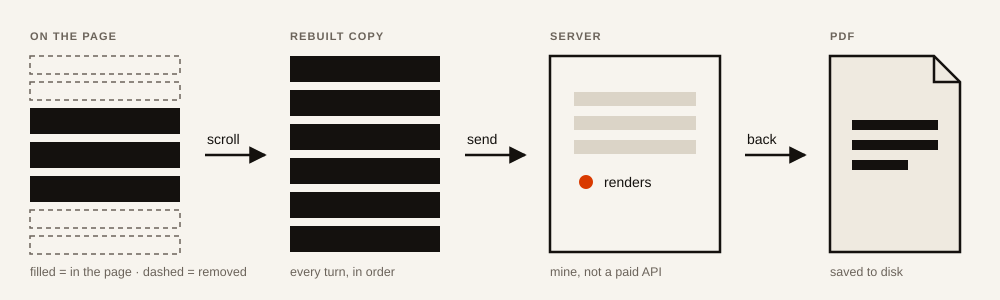
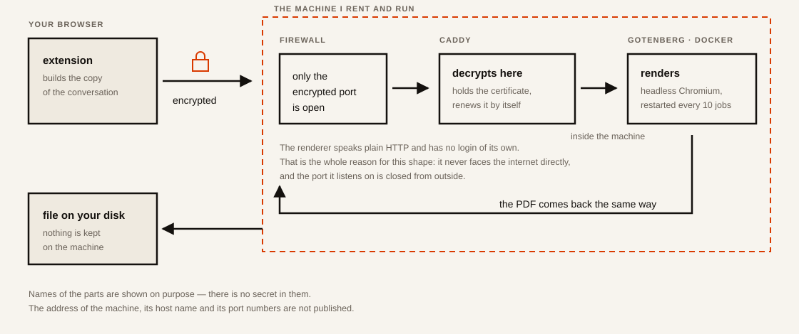

A Chrome extension. It saves a ChatGPT conversation as a PDF: the whole thread, only the answers, or blocks you pick.




Rebuilt from the repository: each frame is the actual markup and stylesheet of that day, rendered again.


The request for a rating got a visible “Not now”. Until then the only way out of it was to click somewhere else.
Added “Everything” to the top of the menu. Exporting the whole conversation was already what the button did, and I assumed that was obvious. An uninstall comment showed it was not: people were looking for that option and did not find it.
Long exports had been arriving cut short, always at the same place. ChatGPT had stopped keeping the turns that scroll out of view, so the extension now walks the whole thread and rebuilds it before anything is rendered. The same day file names stopped collapsing into “New chat”: the name falls back to the first question asked.
Images are shrunk before the file is sent. They used to be packed in at full size, so a chat with several pictures made a 24 MB file. That was heavy enough for the renderer to give up. The same chat now makes 2.7 MB and the pictures look the same.
Block selection: messages are ticked one by one and the button shows how many are selected.
Rendering moved off the paid service onto a machine I rent. The same conversion, but the cost stops growing with every export someone makes.
Renamed to Export. Paper settings moved into a separate window, and the menu began asking what to export instead of how to print it.
Built on top of someone else's extension that saved any web page as a PDF through its own paid conversion service. The first version kept that shape: a button “Save as PDF” and a menu about paper — A4 or Letter, portrait or landscape.